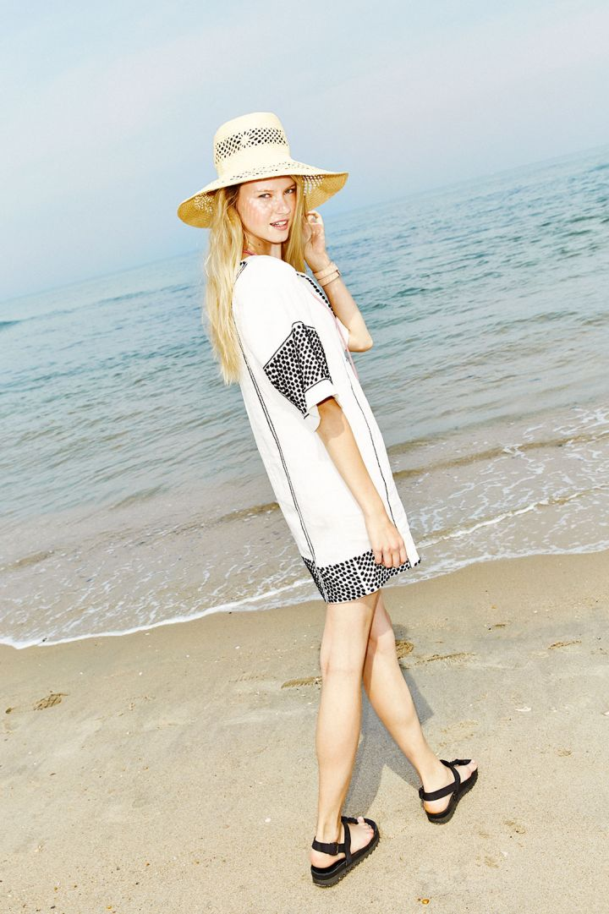

Changes in weather can be very abrupt and adapting our outfits to the changes can be annoyinng. Should you dress for the weather or the season? When can you start to rotate spring items into your winter wardrobe? And, most important, how do you look chic when the temperature and time of year are clashing? Having an arsenal of ideas for each season could make your mornings a lot less stressful. Bright colors are perfect for Summer, cozy looks for Fall, warm layers of clothes for Winter and pastel officewear for Spring. Here are some tips to dress for each season.
Doing sheer doesn't automatically mean giving the world a peep show (though we rarely pass up an opportunity to show off a fancy bra). With the right styling — like wearing a transparent piece under or over your opaque closet staples — you can work sheer into your spring wardrobe no matter your aesthetic or willingness to bare skin. Try out the diaphanous trend in a low-touch way by opting for a sheer-ish dress with a built-in slip. By tucking the front of the dress into a cute miniskirt — and allowing the see-through layers to overflow — you'll take your look to a whole new level. Tie it all together with a bold jacket to give your arms a little extra lovin'.
Figuring out what to get dressed in each morning when your brain is only 50% on is hard enough. Doing it with the expectation that your entire body is going to transform into a bloated, sweating, frizzled, frazzled mess as soon as you step out of your (hopefully) air- conditioned abode is enough to send you back to bed. It's rough out there for anyone trying to project a certain amount of look in the summer, aside from the fresh-from-the-gym, damp one. It's all about thinking strategically and taking a few shortcuts that ensure maximum breeziness. To help, we headed to the beach on a particu larly sweltering day to put in practice some hot-weather style moves th at'll keep you looking as un-melted as possible.
Temperatures fluctuate greatly during the fall. Mornings will be chilly , afternoons will be hot, and evenings will be cool again. If you are at work or at school all day long, you may not have the time to change your clothes. The best way to manage this is by wearing layers, which you can take off as the day grows warmer. If you live in a place that is relatively warm during the fall, wear light coats, cardigans, and sweaters. Avoid anything too thick or warm. If you live in a place that is cold and wet during the fall, consider wearing a jacket or a long trench coat. You can also wear heavier coats, cardigans, and sweaters. Hoodies are great for all sorts of weather; they can also be easily tied around your waist when it gets too warm.
Thermal underwear is a type of clothing worn beneath your top layers to keep your body warm, especially during harsh winter tempertures. Made from specialty fabric to protect against the cold, thermal underwear traps body heat to provide warmth. The best thermal underwear for women often feature popular and recommended fabrics, such as merino wool and polyester blends, because they are lightweight, ultra-warm, and wick away moisture. Outdoor brands specifically choose certain fabrics that are ideal for traveling in the winter.